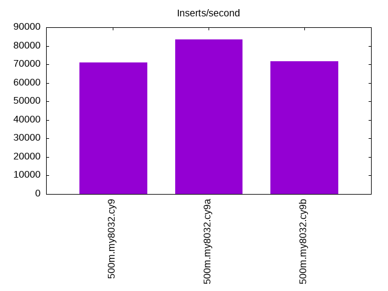
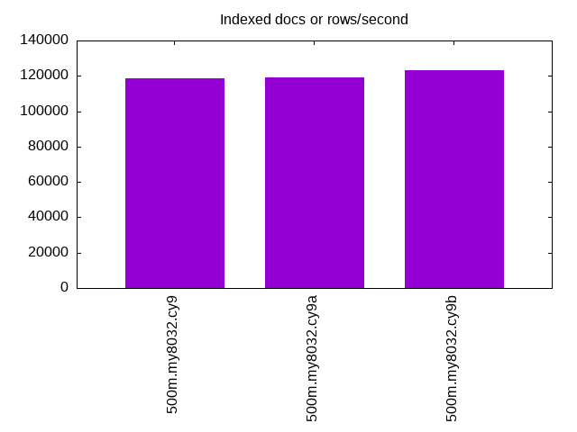
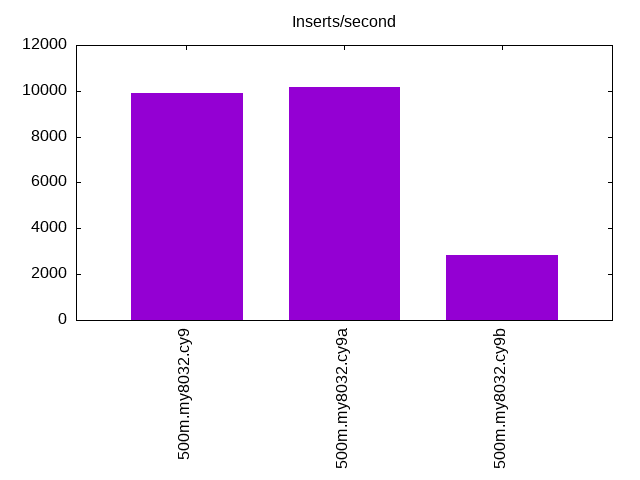
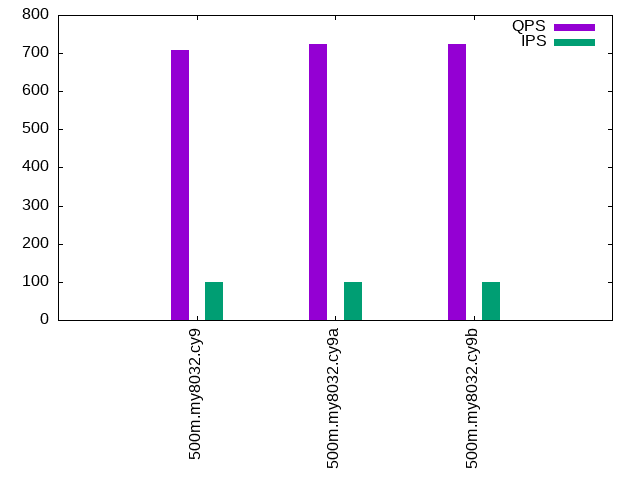
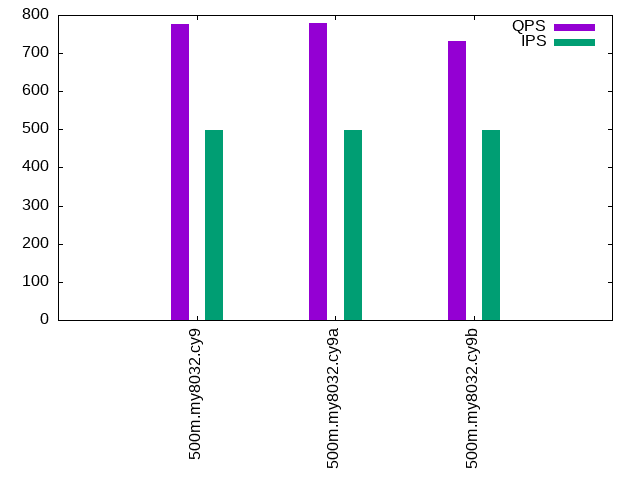
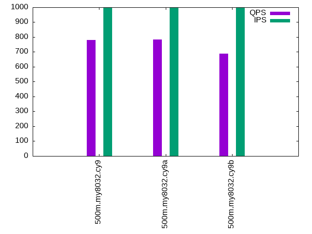

This is a report for the insert benchmark with 500M docs and 1 client(s). It is generated by scripts (bash, awk, sed) and Tufte might not be impressed. An overview of the insert benchmark is here and a short update is here. Below, by DBMS, I mean DBMS+version.config. An example is my8020.c10b40 where my means MySQL, 8020 is version 8.0.20 and c10b40 is the name for the configuration file.
The test server is an Intel NUC with 4 cores, 16G RAM and a Samsung 970 EVO. More details are here. Clients and the DBMS share one server. The per-database configs are in the per-database subdirectories here.
The tested DBMS are:
The numbers are inserts/s for l.i0 and l.i1, indexed docs (or rows) /s for l.x and queries/s for q*.2. The values are the average rate over the entire test for inserts (IPS) and queries (QPS). The range of values for IPS and QPS is split into 3 parts: bottom 25%, middle 50%, top 25%. Values in the bottom 25% have a red background, values in the top 25% have a green background and values in the middle have no color. A gray background is used for values that can be ignored because the DBMS did not sustain the target insert rate. Red backgrounds are not used when the minimum value is within 80% of the max value.
| dbms | l.i0 | l.x | l.i1 | q100.1 | q500.1 | q1000.1 |
|---|---|---|---|---|---|---|
| 500m.my8032.cy9 | 71098 | 118443 | 9920 | 709 | 777 | 779 |
| 500m.my8032.cy9a | 83438 | 119290 | 10184 | 725 | 779 | 783 |
| 500m.my8032.cy9b | 71813 | 123450 | 2852 | 723 | 732 | 688 |
This lists the average rate of inserts/s for the tests that do inserts concurrent with queries. For such tests the query rate is listed in the table above. The read+write tests are setup so that the insert rate should match the target rate every second. Cells that are not at least 95% of the target have a red background to indicate a failure to satisfy the target.
| dbms | q100.1 | q500.1 | q1000.1 |
|---|---|---|---|
| my8032.cy9 | 100 | 499 | 999 |
| my8032.cy9a | 100 | 499 | 999 |
| my8032.cy9b | 100 | 499 | 999 |
| target | 100 | 500 | 1000 |
l.i0: load without secondary indexes. Graphs for performance per 1-second interval are here.
Average throughput:
Insert response time histogram: each cell has the percentage of responses that take <= the time in the header and max is the max response time in seconds. For the max column values in the top 25% of the range have a red background and in the bottom 25% of the range have a green background. The red background is not used when the min value is within 80% of the max value.
| dbms | 256us | 1ms | 4ms | 16ms | 64ms | 256ms | 1s | 4s | 16s | gt | max |
|---|---|---|---|---|---|---|---|---|---|---|---|
| my8032.cy9 | 99.635 | 0.281 | 0.084 | nonzero | 0.084 | ||||||
| my8032.cy9a | 99.652 | 0.269 | 0.077 | 0.002 | 0.118 | ||||||
| my8032.cy9b | 99.623 | 0.280 | 0.096 | nonzero | 0.091 |
Performance metrics for the DBMS listed above. Some are normalized by throughput, others are not. Legend for results is here.
ips qps rps rmbps wps wmbps rpq rkbpq wpi wkbpi csps cpups cspq cpupq dbgb1 dbgb2 rss maxop p50 p99 tag 71098 0 0 0.0 415.9 26.6 0.000 0.000 0.006 0.383 8248 35.6 0.116 20 26.2 35.8 11.1 0.084 71022 67348 500m.my8032.cy9 83438 0 0 0.0 484.8 31.1 0.000 0.000 0.006 0.382 9696 36.9 0.116 18 26.2 35.8 11.1 0.118 83644 75558 500m.my8032.cy9a 71813 0 0 0.0 420.0 26.9 0.000 0.000 0.006 0.383 8332 34.6 0.116 19 26.2 35.8 11.1 0.091 71821 67679 500m.my8032.cy9b
l.x: create secondary indexes.
Average throughput:
Performance metrics for the DBMS listed above. Some are normalized by throughput, others are not. Legend for results is here.
ips qps rps rmbps wps wmbps rpq rkbpq wpi wkbpi csps cpups cspq cpupq dbgb1 dbgb2 rss maxop p50 p99 tag 118443 0 1869 168.8 2424.0 152.9 0.016 1.460 0.020 1.322 8842 73.2 0.075 25 58.6 68.2 10.4 0.014 NA NA 500m.my8032.cy9 119290 0 1876 169.0 2412.9 153.6 0.016 1.450 0.020 1.319 8823 72.9 0.074 24 58.6 68.2 10.4 0.010 NA NA 500m.my8032.cy9a 123450 0 1948 174.6 2551.9 159.3 0.016 1.448 0.021 1.322 9407 70.6 0.076 23 58.6 68.2 10.4 0.013 NA NA 500m.my8032.cy9b
l.i1: continue load after secondary indexes created. Graphs for performance per 1-second interval are here.
Average throughput:
Insert response time histogram: each cell has the percentage of responses that take <= the time in the header and max is the max response time in seconds. For the max column values in the top 25% of the range have a red background and in the bottom 25% of the range have a green background. The red background is not used when the min value is within 80% of the max value.
| dbms | 256us | 1ms | 4ms | 16ms | 64ms | 256ms | 1s | 4s | 16s | gt | max |
|---|---|---|---|---|---|---|---|---|---|---|---|
| my8032.cy9 | 68.510 | 28.524 | 2.831 | 0.107 | 0.028 | 0.742 | |||||
| my8032.cy9a | 71.633 | 25.556 | 2.690 | 0.091 | 0.031 | 0.815 | |||||
| my8032.cy9b | 80.943 | 16.916 | 2.107 | 0.035 | 0.826 |
Performance metrics for the DBMS listed above. Some are normalized by throughput, others are not. Legend for results is here.
ips qps rps rmbps wps wmbps rpq rkbpq wpi wkbpi csps cpups cspq cpupq dbgb1 dbgb2 rss maxop p50 p99 tag 9920 0 1331 20.8 2896.0 83.4 0.134 2.147 0.292 8.613 12070 29.4 1.217 119 91.9 105.3 10.7 0.742 10843 499 500m.my8032.cy9 10184 0 1377 21.5 2958.7 85.3 0.135 2.163 0.291 8.579 12342 29.7 1.212 117 91.9 105.3 10.7 0.815 11088 350 500m.my8032.cy9a 2852 0 4458 69.7 6046.2 153.0 1.563 25.013 2.120 54.955 27447 16.0 9.624 224 91.8 101.4 10.5 0.826 2949 749 500m.my8032.cy9b
q100.1: range queries with 100 insert/s per client. Graphs for performance per 1-second interval are here.
Average throughput:
Query response time histogram: each cell has the percentage of responses that take <= the time in the header and max is the max response time in seconds. For max values in the top 25% of the range have a red background and in the bottom 25% of the range have a green background. The red background is not used when the min value is within 80% of the max value.
| dbms | 256us | 1ms | 4ms | 16ms | 64ms | 256ms | 1s | 4s | 16s | gt | max |
|---|---|---|---|---|---|---|---|---|---|---|---|
| my8032.cy9 | 7.105 | 39.419 | 52.053 | 1.097 | 0.317 | 0.009 | 0.142 | ||||
| my8032.cy9a | 7.010 | 39.605 | 52.071 | 1.060 | 0.243 | 0.010 | 0.141 | ||||
| my8032.cy9b | 4.556 | 41.151 | 53.699 | 0.475 | 0.117 | nonzero | 0.117 |
Insert response time histogram: each cell has the percentage of responses that take <= the time in the header and max is the max response time in seconds. For max values in the top 25% of the range have a red background and in the bottom 25% of the range have a green background. The red background is not used when the min value is within 80% of the max value.
| dbms | 256us | 1ms | 4ms | 16ms | 64ms | 256ms | 1s | 4s | 16s | gt | max |
|---|---|---|---|---|---|---|---|---|---|---|---|
| my8032.cy9 | 0.139 | 74.292 | 25.375 | 0.194 | 0.079 | ||||||
| my8032.cy9a | 0.181 | 74.611 | 24.306 | 0.903 | 0.129 | ||||||
| my8032.cy9b | 15.903 | 83.653 | 0.444 | 0.101 |
Performance metrics for the DBMS listed above. Some are normalized by throughput, others are not. Legend for results is here.
ips qps rps rmbps wps wmbps rpq rkbpq wpi wkbpi csps cpups cspq cpupq dbgb1 dbgb2 rss maxop p50 p99 tag 100 709 3591 56.1 842.3 21.3 5.063 81.011 8.440 218.820 12148 15.9 17.127 897 91.9 105.4 10.7 0.142 735 64 500m.my8032.cy9 100 725 3663 57.2 846.6 21.4 5.053 80.848 8.483 219.956 12339 16.1 17.020 888 91.9 105.4 10.7 0.141 735 64 500m.my8032.cy9a 100 723 3553 55.5 502.6 12.3 4.914 78.624 5.036 126.484 11325 15.9 15.661 880 91.9 101.5 10.5 0.117 719 160 500m.my8032.cy9b
q500.1: range queries with 500 insert/s per client. Graphs for performance per 1-second interval are here.
Average throughput:
Query response time histogram: each cell has the percentage of responses that take <= the time in the header and max is the max response time in seconds. For max values in the top 25% of the range have a red background and in the bottom 25% of the range have a green background. The red background is not used when the min value is within 80% of the max value.
| dbms | 256us | 1ms | 4ms | 16ms | 64ms | 256ms | 1s | 4s | 16s | gt | max |
|---|---|---|---|---|---|---|---|---|---|---|---|
| my8032.cy9 | 8.991 | 37.440 | 52.787 | 0.586 | 0.196 | 0.056 | |||||
| my8032.cy9a | 8.658 | 37.571 | 52.975 | 0.609 | 0.187 | 0.051 | |||||
| my8032.cy9b | 5.035 | 39.492 | 54.836 | 0.456 | 0.182 | nonzero | 0.071 |
Insert response time histogram: each cell has the percentage of responses that take <= the time in the header and max is the max response time in seconds. For max values in the top 25% of the range have a red background and in the bottom 25% of the range have a green background. The red background is not used when the min value is within 80% of the max value.
| dbms | 256us | 1ms | 4ms | 16ms | 64ms | 256ms | 1s | 4s | 16s | gt | max |
|---|---|---|---|---|---|---|---|---|---|---|---|
| my8032.cy9 | 33.833 | 64.267 | 1.900 | 0.048 | |||||||
| my8032.cy9a | 35.136 | 62.953 | 1.911 | 0.051 | |||||||
| my8032.cy9b | 31.350 | 67.211 | 1.439 | 0.097 |
Performance metrics for the DBMS listed above. Some are normalized by throughput, others are not. Legend for results is here.
ips qps rps rmbps wps wmbps rpq rkbpq wpi wkbpi csps cpups cspq cpupq dbgb1 dbgb2 rss maxop p50 p99 tag 499 777 3796 59.3 687.2 17.5 4.888 78.206 1.376 35.838 12417 16.2 15.989 834 92.1 105.6 10.7 0.056 783 64 500m.my8032.cy9 499 779 3809 59.5 688.7 17.5 4.888 78.210 1.379 35.905 12453 16.3 15.981 837 92.1 105.6 10.7 0.051 783 64 500m.my8032.cy9a 499 732 4350 68.0 1282.4 32.0 5.947 95.157 2.568 65.605 15142 17.9 20.700 979 92.1 101.7 10.5 0.071 719 512 500m.my8032.cy9b
q1000.1: range queries with 1000 insert/s per client. Graphs for performance per 1-second interval are here.
Average throughput:
Query response time histogram: each cell has the percentage of responses that take <= the time in the header and max is the max response time in seconds. For max values in the top 25% of the range have a red background and in the bottom 25% of the range have a green background. The red background is not used when the min value is within 80% of the max value.
| dbms | 256us | 1ms | 4ms | 16ms | 64ms | 256ms | 1s | 4s | 16s | gt | max |
|---|---|---|---|---|---|---|---|---|---|---|---|
| my8032.cy9 | 10.933 | 34.415 | 53.832 | 0.651 | 0.170 | nonzero | 0.065 | ||||
| my8032.cy9a | 10.535 | 34.647 | 54.007 | 0.645 | 0.166 | 0.061 | |||||
| my8032.cy9b | 3.630 | 38.340 | 57.203 | 0.588 | 0.196 | 0.044 | 0.100 |
Insert response time histogram: each cell has the percentage of responses that take <= the time in the header and max is the max response time in seconds. For max values in the top 25% of the range have a red background and in the bottom 25% of the range have a green background. The red background is not used when the min value is within 80% of the max value.
| dbms | 256us | 1ms | 4ms | 16ms | 64ms | 256ms | 1s | 4s | 16s | gt | max |
|---|---|---|---|---|---|---|---|---|---|---|---|
| my8032.cy9 | 62.960 | 35.814 | 1.226 | 0.054 | |||||||
| my8032.cy9a | 63.636 | 35.185 | 1.178 | 0.001 | 0.065 | ||||||
| my8032.cy9b | 37.314 | 60.724 | 1.962 | 0.147 |
Performance metrics for the DBMS listed above. Some are normalized by throughput, others are not. Legend for results is here.
ips qps rps rmbps wps wmbps rpq rkbpq wpi wkbpi csps cpups cspq cpupq dbgb1 dbgb2 rss maxop p50 p99 tag 999 779 3827 59.8 1043.3 26.8 4.913 78.608 1.045 27.487 13578 17.4 17.430 893 92.6 106.0 10.7 0.065 767 575 500m.my8032.cy9 999 783 3844 60.1 1043.7 26.8 4.910 78.565 1.045 27.475 13619 17.3 17.396 884 92.6 106.0 10.7 0.061 783 575 500m.my8032.cy9a 999 688 4992 78.0 2324.0 58.3 7.257 116.112 2.327 59.769 19317 20.7 28.082 1204 92.6 102.1 10.5 0.100 687 320 500m.my8032.cy9b
l.i0: load without secondary indexes
Performance metrics for all DBMS, not just the ones listed above. Some are normalized by throughput, others are not. Legend for results is here.
ips qps rps rmbps wps wmbps rpq rkbpq wpi wkbpi csps cpups cspq cpupq dbgb1 dbgb2 rss maxop p50 p99 tag 71098 0 0 0.0 415.9 26.6 0.000 0.000 0.006 0.383 8248 35.6 0.116 20 26.2 35.8 11.1 0.084 71022 67348 500m.my8032.cy9 83438 0 0 0.0 484.8 31.1 0.000 0.000 0.006 0.382 9696 36.9 0.116 18 26.2 35.8 11.1 0.118 83644 75558 500m.my8032.cy9a 71813 0 0 0.0 420.0 26.9 0.000 0.000 0.006 0.383 8332 34.6 0.116 19 26.2 35.8 11.1 0.091 71821 67679 500m.my8032.cy9b
l.x: create secondary indexes
Performance metrics for all DBMS, not just the ones listed above. Some are normalized by throughput, others are not. Legend for results is here.
ips qps rps rmbps wps wmbps rpq rkbpq wpi wkbpi csps cpups cspq cpupq dbgb1 dbgb2 rss maxop p50 p99 tag 118443 0 1869 168.8 2424.0 152.9 0.016 1.460 0.020 1.322 8842 73.2 0.075 25 58.6 68.2 10.4 0.014 NA NA 500m.my8032.cy9 119290 0 1876 169.0 2412.9 153.6 0.016 1.450 0.020 1.319 8823 72.9 0.074 24 58.6 68.2 10.4 0.010 NA NA 500m.my8032.cy9a 123450 0 1948 174.6 2551.9 159.3 0.016 1.448 0.021 1.322 9407 70.6 0.076 23 58.6 68.2 10.4 0.013 NA NA 500m.my8032.cy9b
l.i1: continue load after secondary indexes created
Performance metrics for all DBMS, not just the ones listed above. Some are normalized by throughput, others are not. Legend for results is here.
ips qps rps rmbps wps wmbps rpq rkbpq wpi wkbpi csps cpups cspq cpupq dbgb1 dbgb2 rss maxop p50 p99 tag 9920 0 1331 20.8 2896.0 83.4 0.134 2.147 0.292 8.613 12070 29.4 1.217 119 91.9 105.3 10.7 0.742 10843 499 500m.my8032.cy9 10184 0 1377 21.5 2958.7 85.3 0.135 2.163 0.291 8.579 12342 29.7 1.212 117 91.9 105.3 10.7 0.815 11088 350 500m.my8032.cy9a 2852 0 4458 69.7 6046.2 153.0 1.563 25.013 2.120 54.955 27447 16.0 9.624 224 91.8 101.4 10.5 0.826 2949 749 500m.my8032.cy9b
q100.1: range queries with 100 insert/s per client
Performance metrics for all DBMS, not just the ones listed above. Some are normalized by throughput, others are not. Legend for results is here.
ips qps rps rmbps wps wmbps rpq rkbpq wpi wkbpi csps cpups cspq cpupq dbgb1 dbgb2 rss maxop p50 p99 tag 100 709 3591 56.1 842.3 21.3 5.063 81.011 8.440 218.820 12148 15.9 17.127 897 91.9 105.4 10.7 0.142 735 64 500m.my8032.cy9 100 725 3663 57.2 846.6 21.4 5.053 80.848 8.483 219.956 12339 16.1 17.020 888 91.9 105.4 10.7 0.141 735 64 500m.my8032.cy9a 100 723 3553 55.5 502.6 12.3 4.914 78.624 5.036 126.484 11325 15.9 15.661 880 91.9 101.5 10.5 0.117 719 160 500m.my8032.cy9b
q500.1: range queries with 500 insert/s per client
Performance metrics for all DBMS, not just the ones listed above. Some are normalized by throughput, others are not. Legend for results is here.
ips qps rps rmbps wps wmbps rpq rkbpq wpi wkbpi csps cpups cspq cpupq dbgb1 dbgb2 rss maxop p50 p99 tag 499 777 3796 59.3 687.2 17.5 4.888 78.206 1.376 35.838 12417 16.2 15.989 834 92.1 105.6 10.7 0.056 783 64 500m.my8032.cy9 499 779 3809 59.5 688.7 17.5 4.888 78.210 1.379 35.905 12453 16.3 15.981 837 92.1 105.6 10.7 0.051 783 64 500m.my8032.cy9a 499 732 4350 68.0 1282.4 32.0 5.947 95.157 2.568 65.605 15142 17.9 20.700 979 92.1 101.7 10.5 0.071 719 512 500m.my8032.cy9b
q1000.1: range queries with 1000 insert/s per client
Performance metrics for all DBMS, not just the ones listed above. Some are normalized by throughput, others are not. Legend for results is here.
ips qps rps rmbps wps wmbps rpq rkbpq wpi wkbpi csps cpups cspq cpupq dbgb1 dbgb2 rss maxop p50 p99 tag 999 779 3827 59.8 1043.3 26.8 4.913 78.608 1.045 27.487 13578 17.4 17.430 893 92.6 106.0 10.7 0.065 767 575 500m.my8032.cy9 999 783 3844 60.1 1043.7 26.8 4.910 78.565 1.045 27.475 13619 17.3 17.396 884 92.6 106.0 10.7 0.061 783 575 500m.my8032.cy9a 999 688 4992 78.0 2324.0 58.3 7.257 116.112 2.327 59.769 19317 20.7 28.082 1204 92.6 102.1 10.5 0.100 687 320 500m.my8032.cy9b
Insert response time histogram
256us 1ms 4ms 16ms 64ms 256ms 1s 4s 16s gt max tag 0.000 0.000 99.635 0.281 0.084 nonzero 0.000 0.000 0.000 0.000 0.084 my8032.cy9 0.000 0.000 99.652 0.269 0.077 0.002 0.000 0.000 0.000 0.000 0.118 my8032.cy9a 0.000 0.000 99.623 0.280 0.096 nonzero 0.000 0.000 0.000 0.000 0.091 my8032.cy9b
TODO - determine whether there is data for create index response time
Insert response time histogram
256us 1ms 4ms 16ms 64ms 256ms 1s 4s 16s gt max tag 0.000 0.000 68.510 28.524 2.831 0.107 0.028 0.000 0.000 0.000 0.742 my8032.cy9 0.000 0.000 71.633 25.556 2.690 0.091 0.031 0.000 0.000 0.000 0.815 my8032.cy9a 0.000 0.000 0.000 80.943 16.916 2.107 0.035 0.000 0.000 0.000 0.826 my8032.cy9b
Query response time histogram
256us 1ms 4ms 16ms 64ms 256ms 1s 4s 16s gt max tag 7.105 39.419 52.053 1.097 0.317 0.009 0.000 0.000 0.000 0.000 0.142 my8032.cy9 7.010 39.605 52.071 1.060 0.243 0.010 0.000 0.000 0.000 0.000 0.141 my8032.cy9a 4.556 41.151 53.699 0.475 0.117 nonzero 0.000 0.000 0.000 0.000 0.117 my8032.cy9b
Insert response time histogram
256us 1ms 4ms 16ms 64ms 256ms 1s 4s 16s gt max tag 0.000 0.000 0.139 74.292 25.375 0.194 0.000 0.000 0.000 0.000 0.079 my8032.cy9 0.000 0.000 0.181 74.611 24.306 0.903 0.000 0.000 0.000 0.000 0.129 my8032.cy9a 0.000 0.000 0.000 15.903 83.653 0.444 0.000 0.000 0.000 0.000 0.101 my8032.cy9b
Query response time histogram
256us 1ms 4ms 16ms 64ms 256ms 1s 4s 16s gt max tag 8.991 37.440 52.787 0.586 0.196 0.000 0.000 0.000 0.000 0.000 0.056 my8032.cy9 8.658 37.571 52.975 0.609 0.187 0.000 0.000 0.000 0.000 0.000 0.051 my8032.cy9a 5.035 39.492 54.836 0.456 0.182 nonzero 0.000 0.000 0.000 0.000 0.071 my8032.cy9b
Insert response time histogram
256us 1ms 4ms 16ms 64ms 256ms 1s 4s 16s gt max tag 0.000 0.000 33.833 64.267 1.900 0.000 0.000 0.000 0.000 0.000 0.048 my8032.cy9 0.000 0.000 35.136 62.953 1.911 0.000 0.000 0.000 0.000 0.000 0.051 my8032.cy9a 0.000 0.000 0.000 31.350 67.211 1.439 0.000 0.000 0.000 0.000 0.097 my8032.cy9b
Query response time histogram
256us 1ms 4ms 16ms 64ms 256ms 1s 4s 16s gt max tag 10.933 34.415 53.832 0.651 0.170 nonzero 0.000 0.000 0.000 0.000 0.065 my8032.cy9 10.535 34.647 54.007 0.645 0.166 0.000 0.000 0.000 0.000 0.000 0.061 my8032.cy9a 3.630 38.340 57.203 0.588 0.196 0.044 0.000 0.000 0.000 0.000 0.100 my8032.cy9b
Insert response time histogram
256us 1ms 4ms 16ms 64ms 256ms 1s 4s 16s gt max tag 0.000 0.000 62.960 35.814 1.226 0.000 0.000 0.000 0.000 0.000 0.054 my8032.cy9 0.000 0.000 63.636 35.185 1.178 0.001 0.000 0.000 0.000 0.000 0.065 my8032.cy9a 0.000 0.000 0.000 37.314 60.724 1.962 0.000 0.000 0.000 0.000 0.147 my8032.cy9b